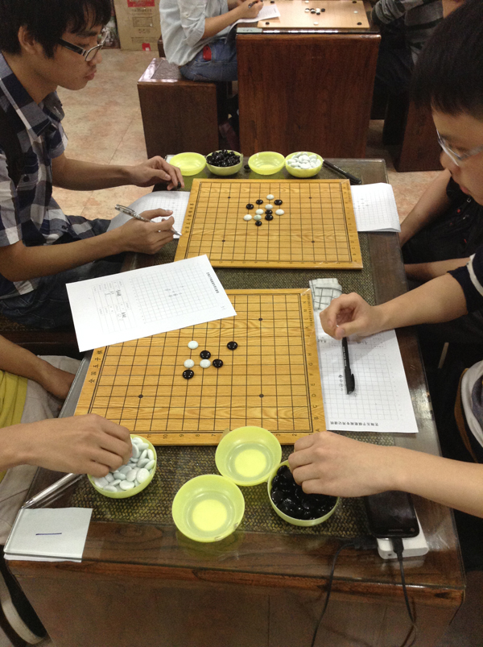
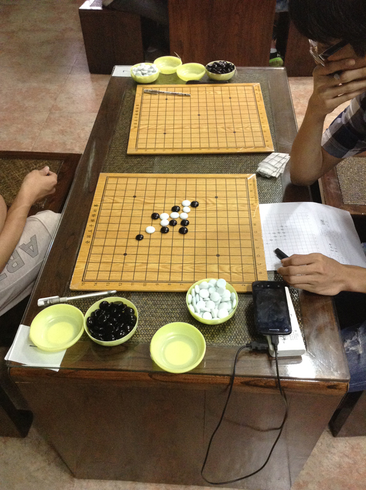
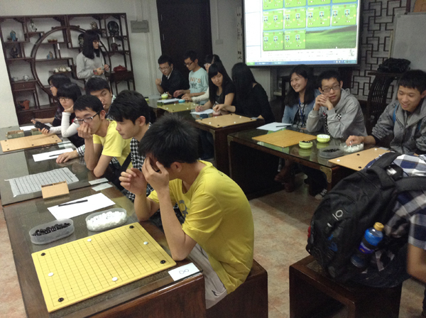
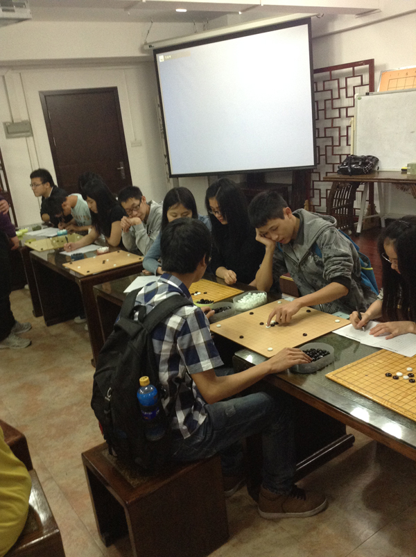

广东高校棋类联赛新赛季即将开始
#1 广东高校棋类联赛新赛季即将开始 作者：无尽 发表时间：2014-3-29 22:00:16
由北理工珠海学院承办的第五届广东高校棋类联赛即将开战。本届比赛分广州大学城、天河、花都、从化及珠海、东莞六个赛区，分别举行围棋、象棋、国际象棋、五子棋四项比赛，是广东最大
规模的高校棋类比赛。各校将选拔优秀选手，参加赛区初赛，脱颖而出者将参加5月下旬在广州棋院举办的决赛。
目前各校选拔工作陆续进行中，相关信息可关注广东各高校新浪微博。4月12、13以及19、20两个周末，各赛区初赛将会上演。为此，今天广州城市职业学院、广工贸学院、广技师学院今天在广城
茶艺社举办了三校交流赛及多面打活动。卫冕冠军广工贸学院仍将是今年高校赛五子棋夺冠热门~ p.s.跟他们师弟下，瑞星走得挺娴熟的 -。-




［此帖子已被 无尽 在 2014-3-29 22:02:02 编辑过］
［此帖子已被 无尽 在 2014-3-29 22:06:00 编辑过］
#2 Re:广东高校棋类联赛新赛季即将开始 作者：尕孩 发表时间：2014-3-31 12:09:08
吖。。我宜家先發現無左增城賽區。。東莞賽區。。hmm。。第一屆。。希望可以驚豔我~~